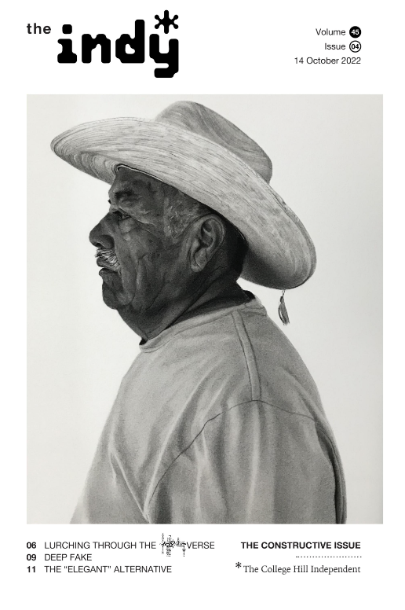
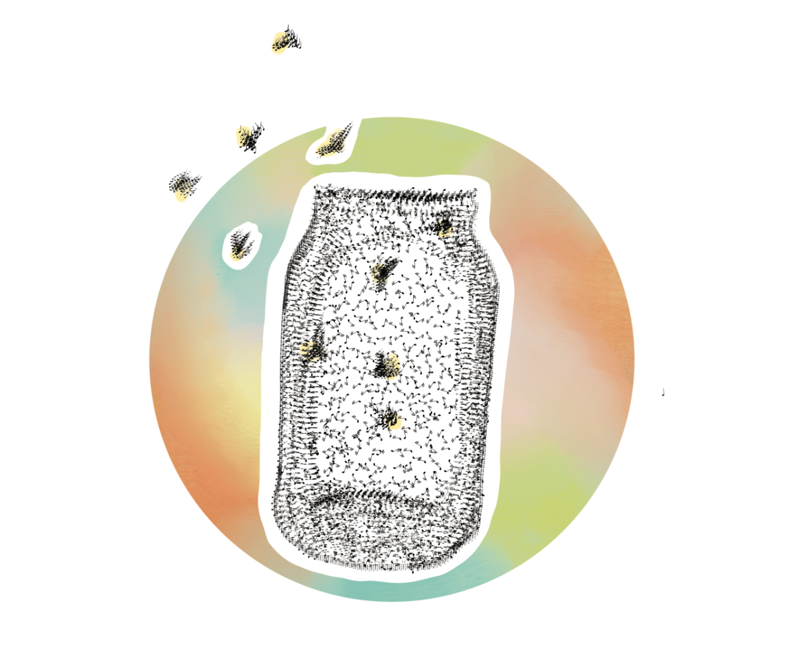
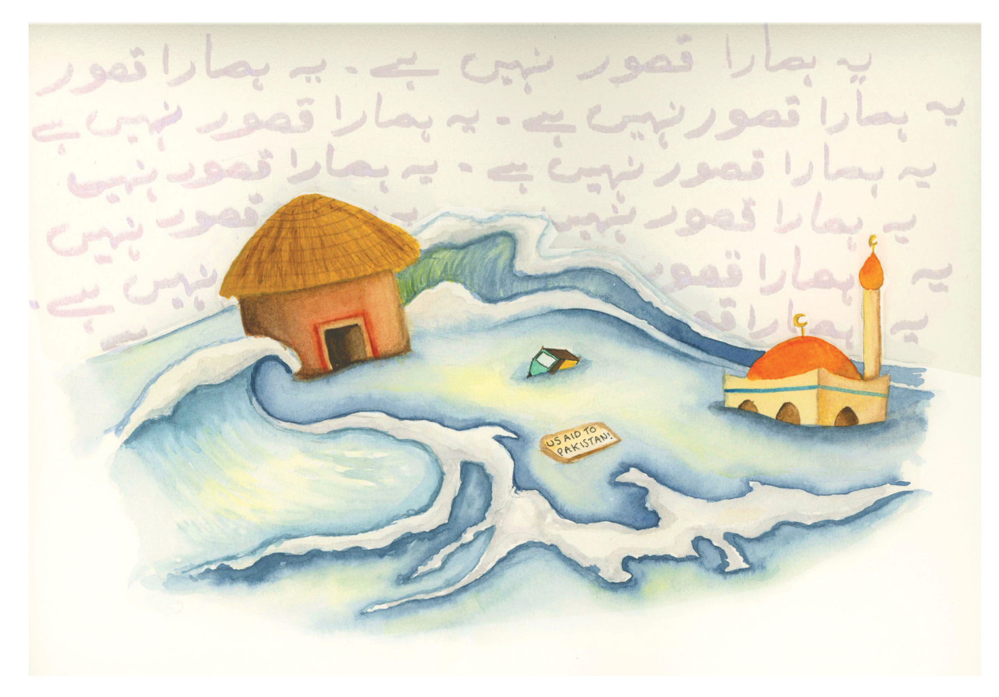
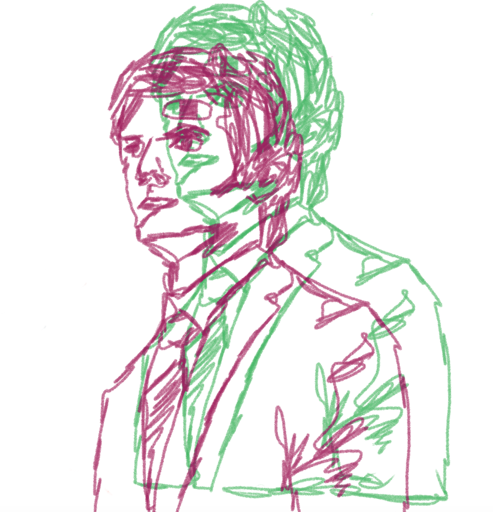
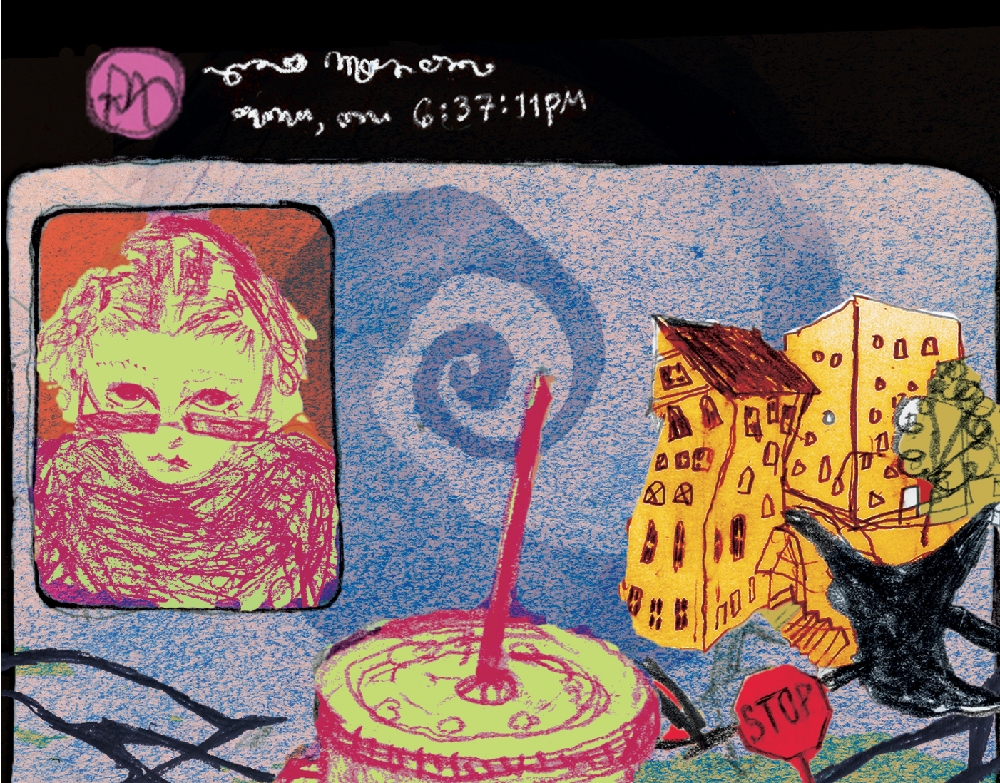
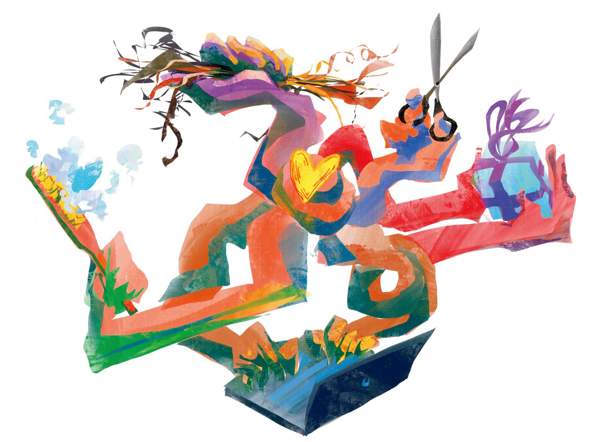
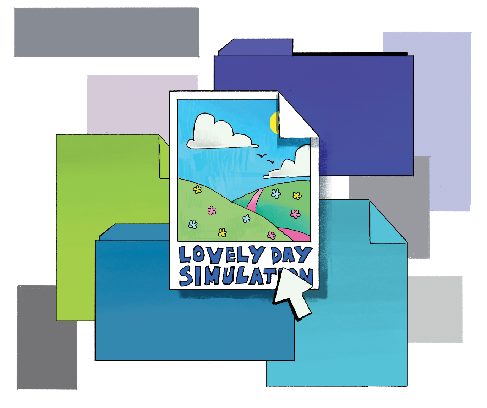
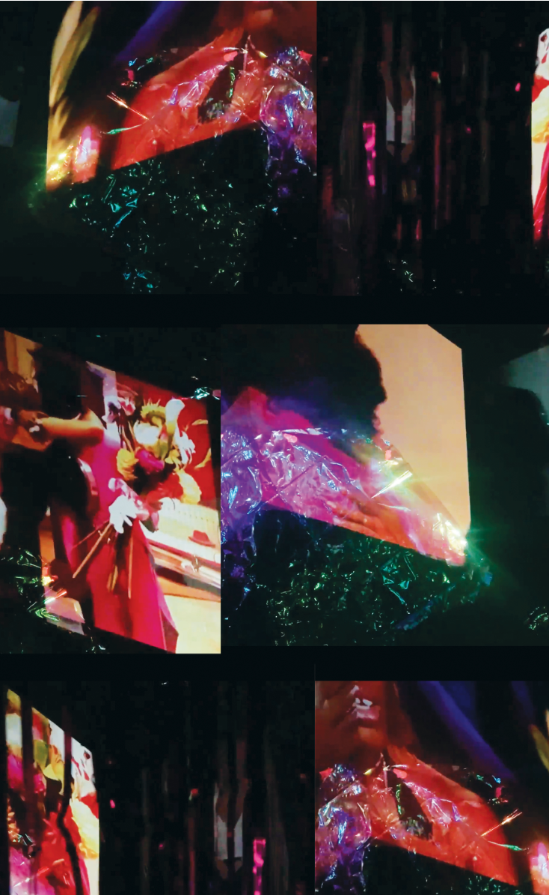

[Metro]
The "Elegant Alternative"
Gleaning as a Practice in Combating Food Insecurity in RI
By Mark Buckley
The term “food desert” is used by the United States Department of Agriculture (USDA) to measure
food insecurity. A “food desert” describes low-income areas in which households
are more than a mile away from large-scale grocery stores.
In Rhode Island, 91% of low-income areas qualify as deserts, the highest in the nation.
Yet many take issue with this phrase, arguing that it does not implicate
the policy and market decisions which produce this phenomenon.
Food justice activists have proposed the phrase “food apartheid”
to better capture the true causes and complexities of food insecurity.
Eva Agudelo, who has a decade of experience with food non-profits,
is an advocate for this adjustment in terminology.
From the Editors
Brandish your board like a just-cleaned broadsword; you’ve been carrying it all day
for this moment. Start at Smitty B, beyond that quaint garden with the bench and the
plants and the squirrels. Look for cars—or not, no one lives forever—and then you’re
off! To your right, the parking lot! To your left, the house with the vegans!
Make sure to glance daringly down the Meeting Street mountain. Then, a few seconds
later, sneak a peek at that department building they just moved somehow (how’d
they do that?). Pretty soon you’ll be coasting under the arch and down the
green—prepare yourself to slide through the oncoming narrow gateway,
before bursting out onto the open road, hell yeah! (Watch out for cars!)
Keep going until Power (that’s Brown to Power, not Power to Brown—never the latter)
and then bang a sharp left. Smile at an onlooker and give your trusty board another
pump; you’re almost home. -SS

In This Issue
“El Empleado” | Rigo Flores
Week in Random Acts of Kindness | Masha Breeze & Nora Matthews
“The Real World” | Lola Simon
The Circle Game | Lily Seltz
Lurching Through the &%@ Verse | Kolya Shields
Deep Fake | Sarah McGrath
The “Elegant” Alternative | Mark Buckley
WFH (Working From Hell) | Rachel Carlson
Humanitarian Hypocrisy | Anushka Kataruka
“My Body Is A Wonderland” | Saphhina Roller
Dear Indy | Annie Stein
Bulletin

[Literary]
The Circle Game
Fiction
By Lily Seltz
Yesterday a child
Dad, can we sing “Yesterday?”
It was just light enough in my New York bedroom to see the shapes of things but not their colors.
You would hold my hand under your thumb, and your nail had waves in it like a tiny ocean—from playing the clarinet a long time ago, you would say.

[World]
Humanitarian Hypocrisy
International response to floods fails Pakistani citizens
By Anushka Kataruka
“Everywhere I travel, I see the same story,” Hamid Mir, a GeoTV Pakistani journalist, says in a recent news broadcast.
“I was here during [the] 2010 [floods], when aid was still successfully reaching people … but
now reaching people has been impossible for NGOs,
governments, and the media.”
Mir stands against a backdrop of makeshift tents, next to what seems like a
boundless lake—but in fact it is land that has been completely submerged by the catastrophic
floods in Sindh, Pakistan.

[Arts]
WFH (Working From Hell)
Severance and the horrors of work-life balance
By Rachel Carlson
Apple TV’s Severance opens on a bird's-eye shot of a disoriented Helly R. (Britt Lower)
lying facedown on a conference table. An unknown voice comes through the room’s speaker,
asking, “Who are you?” The voice is cool, slightly upbeat, verging on automated.
Helly looks around and scoffs: “That’s the first question?” Then she goes silent.
She can’t answer it. This realization is as unsettling for us as viewers as it is for Helly.
[Week in Review]
Week in Random Acts of Kindness
By Masha Breeze & Nora Matthews
Extry extry, read all about it! Nora and I have a nose for news, but nothing really
happened this week so we decided to make some headlines of our own by performing
random acts of kindness around our community. At first, we wanted it to be anonymous,
but then we realized we could extract social capital from telling people about it!
So here’s a list of all the kindnesses we did, take notes <333

[Science and Technology]
Lurching Through The &%@ Verse
By Kolya Shields
Every object is embedded in a socio-historical matrix that points toward the future.
Technologies’ fraying threads—discourses, materials, fantasies—contain and gesture at potentialities.
Here, I present a possible critical framework for three art pieces, and follow it by constructing
a world knotted together with some of the threads within and around these objects.

[Features]
Deep Fake
By Sarah McGrath
On September 15, 2022, TikTok announced the creation of “TikTok Now”—
a new feature on the app’s homepage that will prompt users to post a
‘candid’ photo of themselves at a different moment every day.
According to a statement released by the company, this not-so-thinly
veiled attempt to replicate the popular photo-sharing app “BeReal” was
designed to “bring the authenticity of TikTok to a whole new creative
experience.”


[Ephemera]
“The Real World”
By Lola Simon